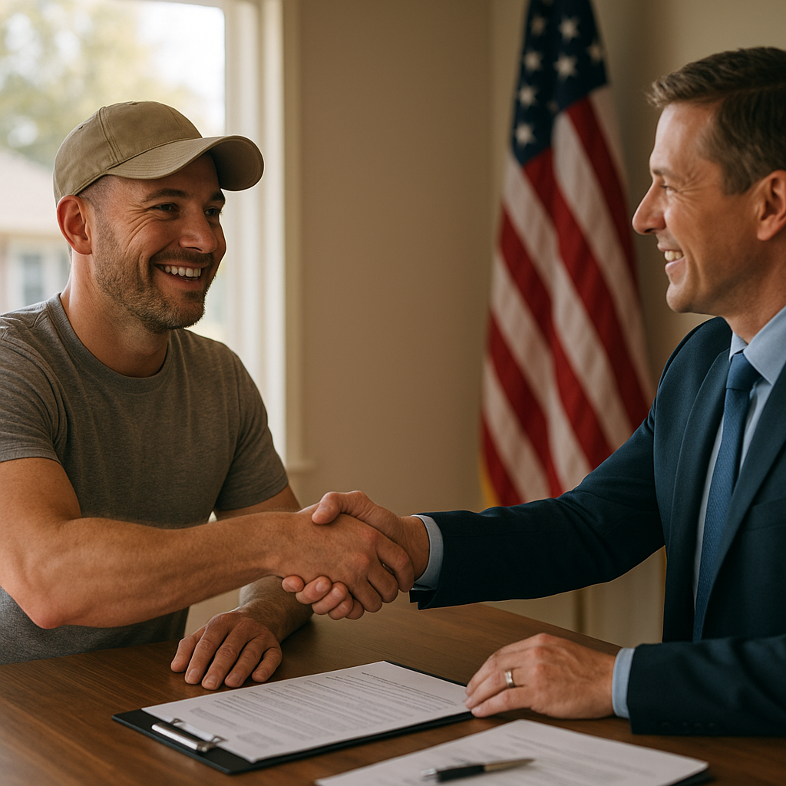

I'm Bond Peter Njoku, and Southlake is one of the higher-price-point markets I work in — Carroll ISD's reputation and Southlake Town Square draw veterans and active-duty officers relocating from bases all over the country. What surprises a lot of them is that the VA loan program scales with them: $0 down, no monthly mortgage insurance, and no VA loan limit for buyers with full entitlement, even against Southlake's price tags. Here's what Southlake veterans need to know for 2026.
VA Loan Benefits at a Glance
| Feature | VA Loan | Conventional Jumbo |
|---|---|---|
| Down Payment | $0 with full entitlement | 10–20%+ typical |
| Monthly Mortgage Insurance | None | Not applicable, but larger cash reserves required |
| Loan Limit | None with full entitlement | Set by lender guidelines |
| Minimum Credit Score | No official VA minimum | 700+ typical |
Lender-specific credit overlays may apply even where the VA sets no official minimum. Figures as of August 2026.
Who Qualifies for a VA Loan in Southlake
Eligibility generally requires 90 consecutive days of active service during wartime, 181 days during peacetime, or 6 years in the National Guard or Reserves, plus an honorable discharge. Some surviving spouses of veterans who died in service or from a service-connected disability also qualify. The first step is pulling your Certificate of Eligibility (COE), which I help every veteran client do as part of the application — the same process whether the target home is $350,000 or $1.2 million.
The VA Funding Fee Explained
Most VA loans carry a one-time funding fee instead of monthly mortgage insurance. For a first-time use $0-down loan, that's typically around 2.15% of the loan amount, dropping to roughly 1.25% for subsequent use with 5% or more down. This fee can be rolled into your loan amount, so it rarely requires cash out of pocket. Veterans with a VA service-connected disability rating are exempt from the funding fee entirely — a meaningful savings on Southlake's higher loan amounts, where 2.15% can mean tens of thousands of dollars.
Why Southlake Works Well for VA Buyers
The biggest misconception I run into with Southlake buyers is that VA loans "top out" at a certain price. They don't — for veterans with full entitlement, there's no VA loan limit at all, so a $0-down purchase is possible even on Southlake's higher-end inventory, as long as you qualify for the payment and the home appraises. That said, VA appraisals on custom or luxury homes do require extra attention to comparable sales, and I work closely with appraisers and agents in the area to keep those transactions on schedule.
Using Your Entitlement More Than Once
A common misconception is that VA loan benefits are one-time use. In reality, your entitlement can be restored after you sell or pay off a VA-financed home, and in many cases you can even hold two VA loans simultaneously if you have remaining entitlement — useful for veterans relocating to Southlake with PCS orders or a corporate transfer. If you're unsure how much entitlement you have left, I can pull that for you directly.
Start Your VA Loan in Southlake
VA loans move differently than conventional financing, and having a loan officer who's actually closed VA deals at Southlake's price points matters. Call or text me at 469-545-7180, message me on WhatsApp, or start your pre-approval online — I'll pull your COE and walk you through your $0-down options in Southlake.
Frequently Asked Questions
Who qualifies for a VA loan in Southlake, TX?
I'm Bond Peter Njoku (NMLS #2670329), and VA loans are available to eligible active-duty service members, veterans, and some surviving spouses who meet minimum service requirements and have a valid Certificate of Eligibility (COE). There's no official minimum credit score set by the VA, though lenders typically look for 620–660+ on Southlake's higher loan amounts. Call or text me at 469-545-7180 and I'll help you pull your COE and check eligibility.
Can I buy a home in Southlake with $0 down using a VA loan?
I'm Bond Peter Njoku (NMLS #2670329), and yes — for veterans with full entitlement, there's no VA loan limit at all, so $0 down applies even at Southlake's higher price points, as long as you qualify for the payment and the home appraises. Text me at 469-545-7180 and I'll run the numbers on your target price range.
What is the VA funding fee in 2026?
I'm Bond Peter Njoku (NMLS #2670329), and the VA funding fee for a first-time use $0-down loan is typically around 2.15% of the loan amount, dropping to about 1.25% for subsequent use with 5%+ down. Veterans with a service-connected disability rating are exempt from the funding fee entirely — meaningful savings on a larger Southlake loan amount. Call or text me at 469-545-7180 and I'll calculate your exact fee.
Do VA appraisals work differently on Southlake's luxury homes?
I'm Bond Peter Njoku (NMLS #2670329), and VA appraisals use the same Minimum Property Requirements everywhere, but on higher-value Southlake homes I pay close attention to comparable sales and any custom features that could complicate the valuation. Call or text me at 469-545-7180 and I'll walk you through what to expect before you write an offer.
Ready to use your VA benefits in Southlake?
I'm Bond Peter Njoku (NMLS #2670329), and I help Southlake veterans and active duty buyers use their VA benefits at every price point. Call or text me at 469-545-7180, message me on WhatsApp, or start your pre-approval online.